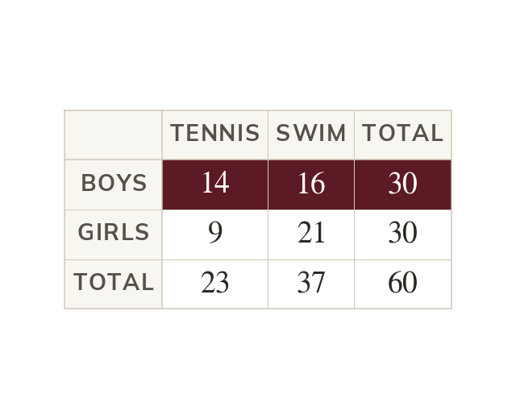

Given shrinks what is possible
A probability is the wanted count over everything possible. 'Given' shrinks what is possible to one row or column. P (A | B) means the probability of A, given B.
A probability is the count of wanted outcomes over the count of everything possible. The word 'given' shrinks what is possible to one row or column of a table, so that row's or column's total becomes the denominator. P (A | B) means the probability of A, given B.